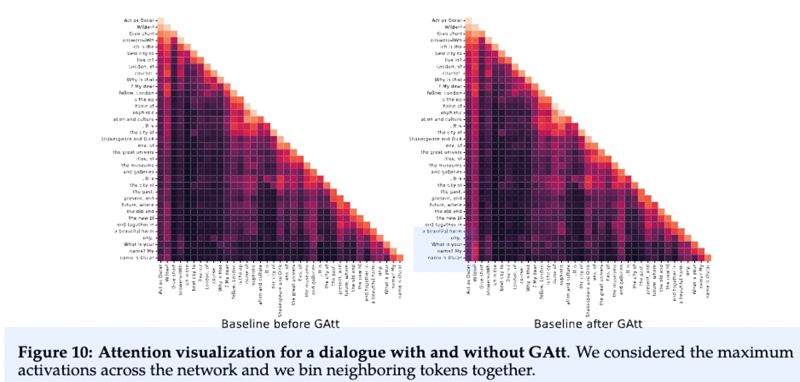
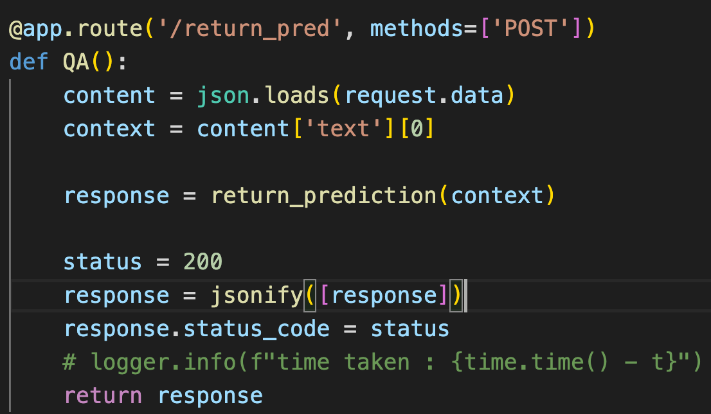

Published on:
Author: Vikash Prasad
First let’s talk about LLAMA2, quoting directly from the paper :” we develop and release Llama 2, a collection of pretrained and fine-tuned large language models (LLMs) ranging in scale from 7 billion to 70 billion parameters. Our fine-tuned LLMs, called Llama 2-Chat, are optimized for dialogue use cases. Our models outperform open-source chat models on most benchmarks we tested, and based on our human evaluations for helpfulness and safety, may be a suitable substitute for closedsource models. We provide a detailed description of our approach to fine-tuning and safety improvements of Llama 2-Chat in order to enable the community to build on our work and contribute to the responsible development of LLMs” .
Thoughts from the paper:
RLHF stands for "Reinforcement Learning from Human Feedback". It is a powerful strategy for fine-tuning Large Language Models (LLMs), enabling significant improvements in their performance . In this paradigm, models are fine-tuned based on feedback from human users, thus iteratively aligning the models’ responses more closely with human expectations and preferences . Ouyang et al. (2022) demonstrates that a combination of instruction fine-tuning and RLHF can help fix issues with factuality, toxicity, and helpfulness that cannot be remedied by simply scaling up LLMs . Bai et al. (2022b) partially automates this fine-tuning-plus-RLHF approach by replacing the human-labeled fine-tuning data with the model’s own self-critiques and revisions, and by replacing human raters with a model when ranking model outputs in RLHF, a process known as “RL from AI Feedback” (RLAIF). But the important technique proposed in LLAMA2 is the Ghost Attention which helps to control the dialogue flow over multiple turns.The GAtt method works by assuming access to a multi-turn dialogue dataset between two persons, with a list of messages [u1, a1, . . . , un, an], where un and an correspond to the user and assistant messages for turn n, respectively . Then, an instruction is defined that should be respected throughout the dialogue, such as "act as" . This instruction is synthetically concatenated to all the user messages of the conversation. To illustrate how GAtt helped reshape attention during fine-tuning, the authors display the maximum attention activations of the model:
Code
For this blog we shall concentrate on how we can use the LLAMA2 as a part of REST API, using this as a REST API can help you integrate into your custom web apps/mobile apps. Let’s just dive straight into the process and code:
- torch==2.0.1
- langchain==0.0.299
- huggingface-hub==0.16.4
- peft @ git+https://github.com/huggingface/peft.git@0c9354bda98eb7f5348699e23ab752e8dca1e60e
- transformers @ git+https://github.com/huggingface/transformers.git@0afa5071bd84e44301750fdc594e33db102cf374
- flask==2.3.3
Import the libraries and initialize the model. Token has been intentionally left blank
Map it to your device, make sure you have Cuda enabled GPUs.
There have been reports that LLAMA2 can be run on CPUs but at the rate of 5tokens/minute. The max new tokens refers to the output from the model, we have set it at 1024 and the max can be 4096. While CodeLLAMA can go up to 16384 tokens. Temperature refers to randomness in the model, lower value makes the output more deterministic.
Few more configs, top_p ensures that tokens with tiny probabilities don’t get sampled. Repetition penalty refers to the number of tokens that will be checked for repetions, from the last tokens generated.
Create a general pipeline using huggingface, remember LLAMA2 is a LLM so we will be using text-generation pipeline.
For this exercise let’s try out two prompts, we will first write a function for general question answering, and then other for summarization. For question answering this is a simple function which accepts request and returns response, we have used the basic concepts of POST and used Flask to implement it.
There is a lot of research on prompts, prompts are basically instructions in LLMs, the more accurate and pointed the prompts are the more accurate answers are expected.We will discuss in detail about prompts in Blog2 where we will show how prompting can improve your answers and can you synthetically create your prompts? Let’s fire a question to our api, I have used Postman, the trusted tool for API testing. You can see the difference in answers, On the left I have requested LLAMA2 to ELIM 5 and on the right I have asked just a blunt question.
For our summarization we implement a simple function, and similar post request functions you can observe that I have used a single prompt here. Exactly what we need !!
So we have shown that we can use Flask effectively to integrate open source LLMs in our custom web apps at almost zero cost(considering if you have a GPU). Talking about GPUs, for this experiment I used Nvidia A6000, and this is the usage that I observed, almost 30% of usage.:
If you would like the complete code please reach out at vikash.k.prasad-1@ou.edu .Please share the blog if you liked it.